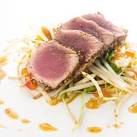
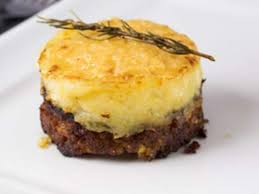
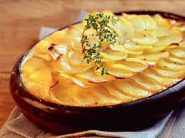
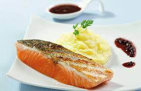
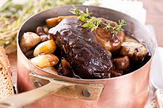
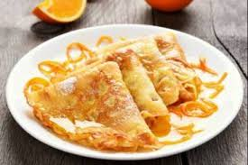
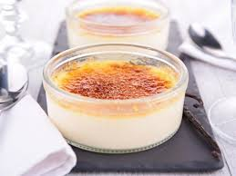

Medaillons de thon au gingembre
Découvrez la recette Pavé de thon au gingembre mariné grillé à l'huile

Pana cotta fraise basilic
La panna cotta, littéralement « crème cuite », est un dessert italien, originaire du Piémont.








